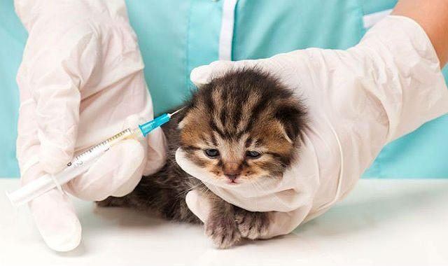

Как ухаживать за шотландской вислоухой кошкой?
Отсутствие заботы сказывается на ней не так быстро и явно, как на длинношёрстных кошках. Однако и её необходим постоянный уход хозяев.
Эта порода считается одним из наилучших вариантов для деловых людей, круглые сутки пропадающих на работе. Она легко переносит длительное отсутствие хозяев и с удовольствием принимает ласку, когда у них есть время для общения с кошкой. Но всё сказанное ни в коем случае не означает, что владельцы могут забросить своего питомца, ограничившись кормлением и сменой лотка. Правильный уход за шотландской вислоухой кошкой включает в себя:
Чистка ушей
Переломленные маленькие ушки – несомненное достоинство скоттиш-фолда. В то же время, их форма увеличивает риск разнообразных заболеваний, начиная от появления ушного клеща и заканчивая глухотой. Чтобы это не случилось, не реже двух раз в месяц (а желательно еженедельно) уши нужно чистить.
Для этой, не слишком приятной кошке, процедуры, вам понадобится:
- Ватные палочки или тампоны.
- Лосьон для чистки ушей (например, «Барс» или «EAR-CARE»).
- Плотная ткань, чтобы завернуть в неё животное в случае, если оно сопротивляется.
Аккуратно выверните ушко наружу, так, чтобы к слуховому проходу можно было легко добраться. Смоченным в лосьоне ватным диском протрите ушную раковину, после чего вытрите насухо чистым тампоном. С ватными палочками будьте осторожны, не придавливайте их сильно к уху. А главное, не засовывайте их глубоко, иначе вы рискуете повредить барабанную перепон
Гигиена глаз

Этим животным нужен особый уход за глазами. Некоторые скоттиш-фолды страдают усиленным слёзотечением. Выделения скапливаются у век, оседают на шерсти.
Для промывания можно использовать специальные ветеринарные средства, к примеру, жидкость «Бриллиантовые глаза», а можно обойтись слабой чайной заваркой или обычной кипячёной водой. Намочите ватный диск и осторожно проведите им от внешнего угла глаза к переносице. Если с первого раза убрать всю выступившую слизь не удалось, смените диск и повторите процедуру сначала. Помните: для каждого протирания нужно использовать чистый тампон.
Уход за шерстью
Как правило, шотландские вислоухие кошки имеют короткую, на ощупь напоминающую плюш, шерсть. Им достаточно одного расчёсывания в неделю. Длинношёрстные представители данной породы встречаются намного реже, и чесать их нужно каждые несколько дней.
Для вычёсывания скоттиш-фолда лучше приобрести две разные расчёски:
- Гребень с длинными, но редкими зубцами. Он нужен для прочёсывания подшёрстка и удаления выпавших волосков.
- Щётка с густым ворсом, которой вы будете проглаживать верхний слой кошачьей шерсти.
Расчешите сначала спину и бока кошки, двигаясь от шеи к хвосту и лишь потом переходите к лапкам и голове.
Шотландские вислоухие кошки, как правило, очень любят, когда их чешут против шерсти. Это помогает им избавляться от отмирающих ворсинок, а вдобавок служит отличным массажем. Поэтому после основного причёсывания можно пройтись гребнем ещё раз, на этот раз против роста волос. И учтите, что щеки и шею у этой породы всегда чешут против шерсти, и лишь потом приглаживают мягкой щёткой.
Водные процедуры
Раз в несколько месяцев кошку нужно купать. К воде эта порода относится спокойно, а котята, с детства приученные к мытью, даже могут сами проситься в ванную. Не используйте человеческие шампуни и гели. Существуют специальные ветеринарные средства. Они избавляют от блох и других паразитов, а главное, не вредят здоровью кошки.
- Перед купанием возьмите два кусочка ваты и заткните ими уши животного, иначе в них попадёт вода.
- Не используйте шланг: тугая струя воды может испугать кошку.
- Вода для купания скоттиш-фолда должна быть чуть теплее комнатной температуры – 30 — 35⁰С. Следите, чтобы она не остывала.
- Намочив шерсть, осторожно намыльте сперва спинку с боками, потом – живот, лапы и хвост. В самую последнюю очередь нанесите шампунь на мордочку. Но будьте осторожны: попав в глаза, шампунь может причинить боль, и кошка начнёт вырываться. А при смывании мыльной пены постарайтесь прикрыть глаза и нос кошки.
- После купания вытрите своего питомца полотенцем или заверните его в мягкую ткань. Пока шерсть влажная, животное легко может простудиться. Поэтому проследите, чтобы в комнате не было сквозняка, а сильно намокшее «полотенце» вовремя менялось на сухое.
Уход за зубами
Правильный уход и содержание шотландской вислоухой кошки предполагает постоянное внимание к полости рта. У животных старше двух лет начинает откладываться так называемый зубной камень, вызывающий воспаление десён и разрушающий зубы. Чтобы предотвратить это, зубы кошки нужно регулярно чистить мягкой щёткой. Процедура эта очень неприятна, поэтому приучать котёнка к ней нужно с детства.
Пасту можно сделать самостоятельно из смеси соли и соды, а можно приобрести профессиональный продукт в зоомагазине. Раз в несколько месяцев (а то и реже, в зависимости от скорости образования зубного камня) животное желательно возить к ветеринару, для удаления этого опасного налёта и обработки полости рта.
Стрижка когтей
Шотландская вислоухая кошка редко гуляет на улице, поэтому когти её практически не стачиваются. Раз в 2 — 3 недели коготки нужно подрезать с помощью специальных щипчиков. Осторожно нажмите на подушечку лапы, чтобы когти выдвинулись на всю длину, и срежьте 1 — 2 миллиметра под углом 90⁰С.
Если у вас дома есть когтеточка, перерыв между стрижками можно увеличить. Купить этот полезный предмет можно в зоомагазине или сделать самостоятельно. Возьмите столбик высотой 40 – 50 см, плотно обмотайте его верёвкой или тканью и зафиксируйте в вертикальном положении. Можно посыпать его щепоткой кошачьей мяты: это привлечёт внимание кошки к новой вещи и приучит её точить когти об неё, а не о мебель
Прививки

Как и другие породистые кошки, скоттиш-фолды нуждаются в обязательной вакцинации.
- Первая прививка делается шотландскому котёнку не ранее, чем в 3 месяца. Она обеспечит малышу защиту от целого комплекса болезней: калицивиоза, ринотрахеита, панлейкопении и бешенства.
- Через 3 – 5 недель проводится повторная вакцинация, после которой у животного вырабатывается стойкий иммунитет к этим заболеваниям.
- Остальные прививки – от стригущего лишая, лейкемии, хламидиоза и других инфекций нужно делать лишь в том случае, если ваш питомец часто бывает на улице.
- Прививку можно делать только здоровому животному, не испытывающему никакого физического дискомфорта. Так, даже режущиеся зубы являются веской причиной отменить поход в лечебницу.
- Необходимо точно соблюдать сроки ревакцинации. Перенос прививки возможен лишь в том случае, если ваш питомец плохо себя чувствует.
- За 10 — 14 дней до вакцинации кошке нужно дать лекарства против глистов: любые паразиты ослабляют животное, а значит, делают введение вакцины опасным для здоровья.
- Ни в коем случае не носите на прививки беременную кошку. В этот период её организм особенно уязвим, и вакцина принесёт больше вреда, чем пользы.